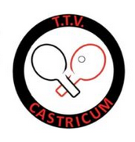
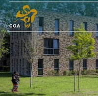

woensdag 1 juli

Afsluiting seizoen
Op 1 juli sluiten we het repetitie seizoen af. Dat doen we bij de Tafeltennisvereniging Castricum. Het adres is Gobatstraat 12a in Castricum.
zondag 27 september
Optreden bij COA
Op zondag 27 september treden we op bij het COA in Zaandam. Het optreden begint om 15:00 uur. We zingen daar voor zo'n 500 asielzoekers afkomstig uit alle delen van de wereld. We zullen ongetwijfeld onder meer onze Refugee Blues ten gehore brengen.
